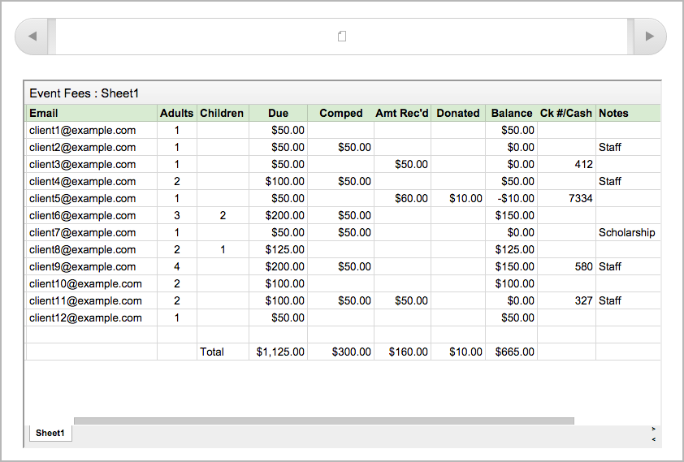
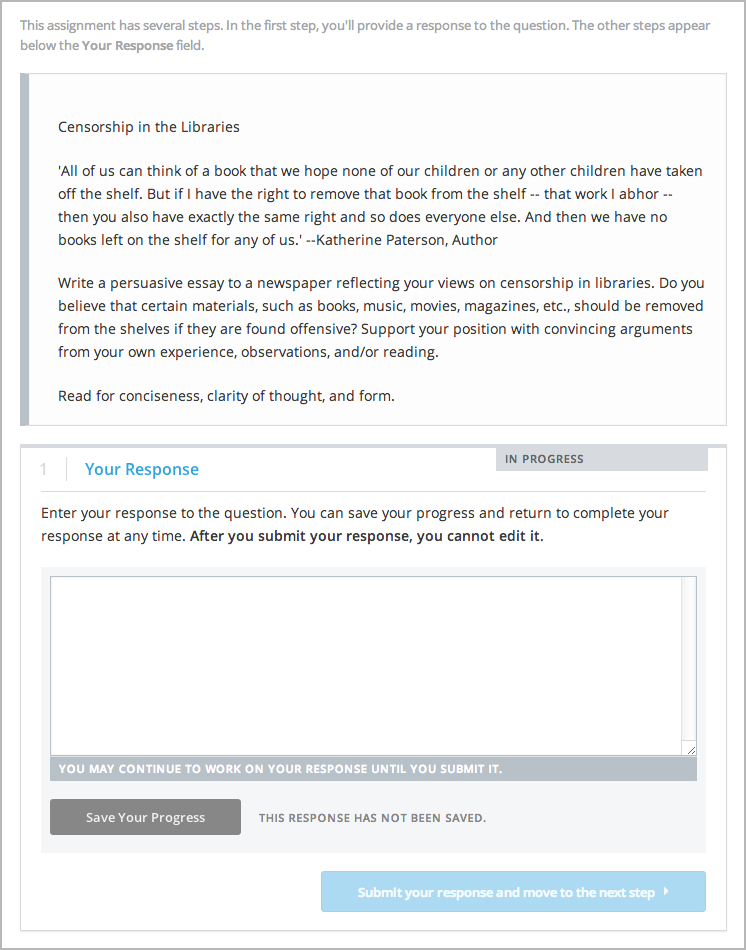
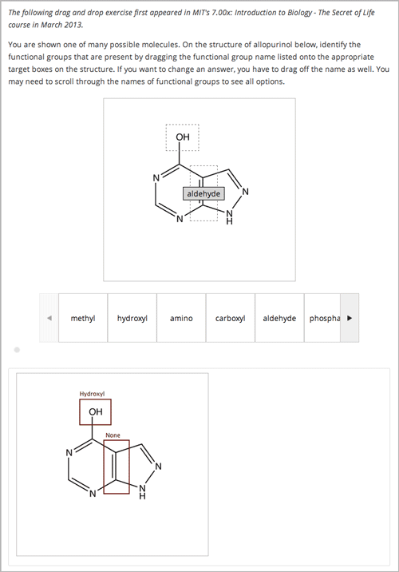
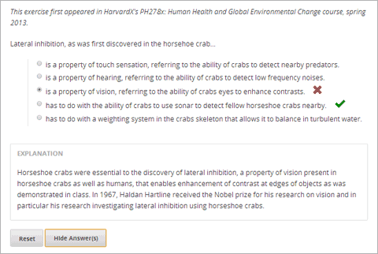

6.1. 创建练习和工具¶
6.1.1. 练习和工具的说明¶
Studio允许你为你的课程创建多种多样的练习和工具.其中有很多的练习和工具在Studio有模板帮助你创建练习. 另外, 个别的课程团队经常创建在Studio没有的练习.
Note
当你创建问题时你必须包含可访问的标签。可访问的标签通常包含你的主要问题文本。标签的说明会出现在每个人问题的页面中。
6.1.2. 一般的练习和工具¶
| 注释 | 注释问题让学生回答一个特殊的文本区域.这个问题出现在文本上方当学生将光标移动到高亮文本时，这能让学生思考在阅读时能这个问题。 | 暂时支持 | |

|
条件模块 | 你可以创建一个条件模板去控制学生可以看到的内容版本.比如，对于一个调查问题回答Yes的学生然后从对这个问题回答No学生看到一块不同的文本. | 暂时支持 |
| 自定义JavaScript | 自定义JavaScript显示和评分问题(也叫*自定义JavaScript问题* or JS输入问题)允许你创建一个 自定义问题或工具使用JavaScript然后吧这个问题或工具直接添加到Studio. | 完全支持 | |

|
External Grader | external grader是一个接受并处理学生对一个问题的回答的服务,然后把这些问题回馈返回到edX平台上.你可以从edX平台上单独创建并配置一个external grader.external grader对于处理软件编程课程中学生提交的复杂的代码非常有用. | 暂时支持 |
| 谷歌日历工具 | 你可以在你的课程中嵌入谷歌日历以便学生能在你的课件中看到这个日历.你可以使用谷歌日历分享测试日期, 办公时间或其他学生感兴趣的日程. | 完全支持 | |
|  | 谷歌云文件工具 | 你可以在你的课程中嵌入一个谷歌云文件,比如文档, 电子表格或图像以便你的学生能在你的课件中看到这个文件. | 完全支持 |

|
谷歌即时环聊 | 你可以添加这个工具为了学习你课程的学生参加即时环聊.使用即时环聊学生通过视频和声音可以相互交流,分享屏幕、一起观看和视频协作完成文档。 | 暂时支持 |

|
IFrame工具 | IFrame允许你从任何网站和工具不分级别的整合练习和工具到你的课程的一个HTML组件。 | 暂时支持 |

|
LTI组件 | LTI组件允许你添加一个外置的应用程序或者非PDF文本到Studio中. | 完全支持 |
|  | 开放回答评估2 | 在开放回答评估中,学生在回答上传不同长度的回答和图像文件会收到不同的回馈. | 完全支持 |
|
|
调查 | 你可以在你的课程中发起调查以便你的学生能够分享不同的观点. | 暂时支持 |
| 自动适配的提示问题 | 一个带有自动适配的提示评估一个学生的回答，然后给学生回馈或基于回答的提示以便这个学生下次一回答更有可能正确回答.这些问题可以是文本输入或多选问题A . | 暂时支持 | |
| 用LaTeX写的的问题 | 如果你有一个已经写入了LaTeX的问题,你可以用这个问题很容易键入转换成XML. | 不支持 |
{kind=link}
{kind=link}
{kind=link}
{kind=link}
{kind=link}
{kind=link}
6.1.3. 图像-基于练习与工具¶
|  | 拖放问题 | 在拖放问题中,学生通过拖动文本或对象到一个图像的指定位置回答. | 暂时支持 |
| 全屏图像 | 全屏图像工具允许学生放大图像到在整个浏览器中.当这个图像包含大量且详细的文本这是非常有用的，这能让学生看的时候更容易联系上下文. | 完全支持 | |
| 图像映射输入 | 在一个图像映射输入中,学生点击在一个图像中限定的地方点击. | 暂时支持 | |
| 图像放大 | 图像放大工具允许你方法部分图像以便学生能看的更清晰. | 完全支持 |
{kind=link}
{kind=link}
{kind=link}
{kind=link}
6.1.4. 多项选择练习和工具¶

|
复选框 | 在复选框问题中,学生选择从可能的是答案的列表中选择一个或多个选项. 学生必须选择所有正确的选项. | 完全支持 |
| 下拉 | 下拉问题允许学生从一批答案选项中选择,给出一个下拉列表.和答案总是直接明显的在问题下面的多项选择不同的是,下拉问题不显示选项除非学生点击下拉箭头. | 完全支持 | |
|  | 多项选择 | 在多项问题中，学生从答案列表中选择一个选项.和答案不直接出现在学生视野中的下拉问题不同的是,多选问题的选项总是直观的出现在问题的下面. | 完全支持 |
| 多项选择和数值输入问题 | 你可以创建一个多选问题和数值输入问提的问题. 学生不仅仅要选择你提供的答案选项，必要的话，还要提供一个更特殊的答案. | 暂时支持 |
{kind=link}
{kind=link}
{kind=link}